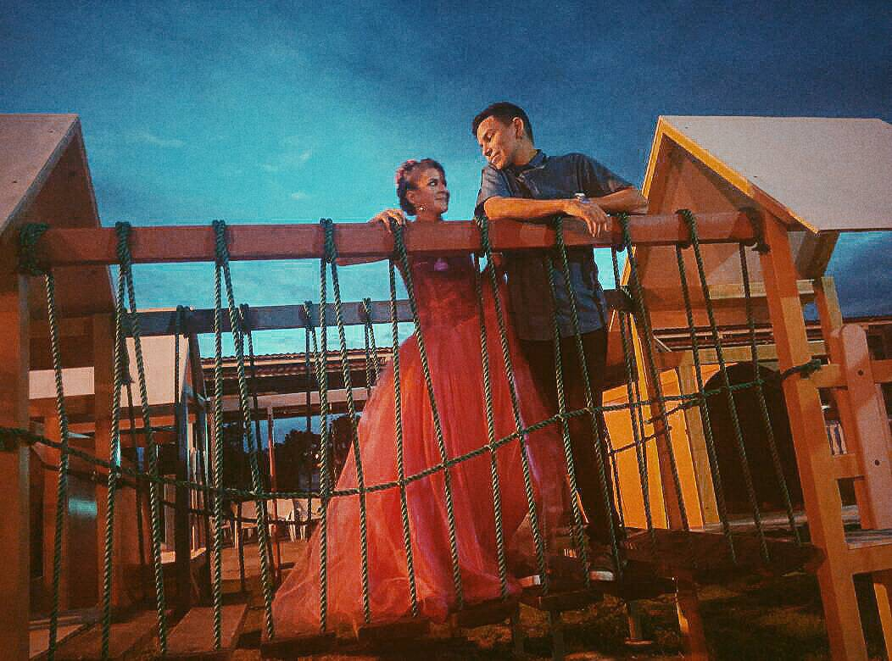

No pelees tanto, mi corazón. El infarto esta dando, solo quiero decirte que bueno, esto se ve feo, pero estoy comenzando. Te amo mucho, y no olvides lo mucho que eres para mi cada dia, quiero vivir siempre a tu lado, tener hijos Uri Jr, y bueno, mi tolaton, esta pagina no es permanente, es hasta que apague la canaima...

"Este es la historia de un pececito, que en su pecera vivía solito.
Era dorado, su cuerpecito, y sus escamas como espejitos.
De estar tan solo le dio tris te za, y en sus colores perdió be lle za...
Hasta que un dia muy mal lo vieron, y en su pecera algo... metierooon.
El pe ce si toooo, abrió los ojos y vio moverse un color ro jo:
"Estoy soñando, que es lo que veo?, la pe ce si ta que yo mas quiero.
Santo remedio desde aqueel dia, su vida tuvo mucha, alegriaaaa.
ayer nacieron: 10 pececitos, 5 dorados y 5 rojitos EEEEEEH"